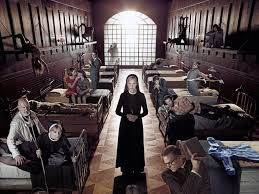
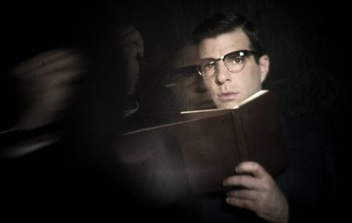
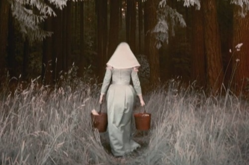

A történet napjainkban kezdődik egy friss házaspárral, akik nászútjukon végiglátogatják Amerika leghorrorisztikusabb helyeit. Így kerülnek az elhagyatott Briarcliff Elmegyógyintézetbe. Majd a történet 1964-ben folytatódik, ahol megismerjük Kit Walkert, akit mindenki csak Bloody Face-nek, azaz Véres Pofának hívnak. Kit tagadja, hogy ő követte el a szörnyű gyilkosságokat. Állítása szerint valami a hatása alá kerítette és ezért cselekedett. Az elmegyógyintézetbe Kit megismerkedik Grace-szel, aki lemészárolta családját. Ezalatt az újságíró, Lana Winters, ellátogat, hogy leleplezze az elmegyógyintézetben zajló szörnyűségeket. Az újságírónő eltéved az intézményben és a könyörtelen Jude Nővér bezárja az egyik szobába. A nővér és Doktor Arden beszélgetése veszekedésbe fullad, amikor kiderül, hogy az orvos megöli betegeit, mert úgy véli a bűn az emberi agyban keresendő. Az epizód végén visszatérünk napjainkban, ahol a pár egyik tagja megsebesül és nem tudnak kijutni az épületből.Bloody Face mind a jelenben, mind pedig a múltban gyilkol. Egy ördögűző érkezik az elmegyógyintézetbe, hogy segítsen egy fiatal fiún, akinek többre van szüksége, mint orvosi segítségre. Az ördögűzés esélyt ad Lanának és Grace-nek a menekülésre, azonban Lana elárulja őket, mivel nem akarja, hogy Kit is velük tartson a szökésben. Dr. Arden otthonában fogad egy prostituáltat, aki felfedezi az orvos beteges hajlamait. Eközben Jude Nővér múltjára is fény derül. Egy hatalmas vihar éri el a Briacliff intézetet, ami esélyt ad a betegek szabadulására. Jude Nővért a múltja kísérti. Az elmegyógyintézetbe egy nőt hoznak be, aki egy koncentrációs tábort túlélőnek vallja magát. Ő Anne Frank, aki Dr. Arden-re náci katonaként emlékszik vissza.Anna-ról kiderül, hogy a nevet és a nő történetét egy könyvből olvasta és ez mély nyomott hagyott benne. Visszaviszik a Briarcliff-be, majd Dr. Arden műtétet hajt végre rajta. Dr. Thredson kijuttatja Lana Winters-t az intézetből.  Az intézetbe egy problémás kislányt hoznak be. Dr. Arden lelepleződni látszik ezért az atya elbocsátja Jude nővért.Jude távozásával Mary Eunice nővér veszi át az irányítást. Lana kiszabadul a doktor fogságából, de később visszakerül az intézetbe... Jude betör az intézetbe, hogy megölje Mary Eunic-t de végül az örök elfogják. Később Dr. Arden kér tőle segítséget, de csapdába csalja és találkozik egy régi haragosával. Dr. Thredson újra megjelenik az elmegyógyintézetben. Lana Dr. Thredson gyermekét várja. Dr. Arden ráveszi Kit-et, hogy ideiglenesen megölje, hogy kiderítse az idegenek megmentik e az életét. Az UFO-k meg is jelennek és visszahozzák Grace-t, aki Kit-től terhes. Napjainkban Johnny Thredson (aki Vérpofa fia), láthatjuk ahol kezelésekre jár, majd később megöli terapeutáját  A Monsieur is megtudja, hogy Mary Eunice-t megszállta az ördög és megpróbálja kiűzni belőle. Dr. Thredson meg akarja szerezni Kit-től a vallomása felvételét amivel leleplezhetné őt. Lana-t kiszöktetik az intézetből és kitálal. Később Kit és Grace is megmenekül a babával, de otthonukban nem várt ismerős várja Kit-et. Később Lana elmegy Olvier Thredson-hoz és megöli. Visszatér a Briarcliff-be, hogy Jude segítségével lebuktassa az egész intézetet, de ott azt állítják felakasztotta magát... Kit, Grace és Alma együtt élnek a gyerekeikkel, de ez az idill hamar tragédiára fordul. Lana könyve a Briarcliff-ről sikeresnek bizonyul. Kit szembesíti a nővel ígéretét miszerint lebuktatja az intézetet és elmondja, hogy Jude nővér él. Vérpofa fia Johnny anyja után kutat, hogy kivégezze. A jelenben járunk. Lana könyve a Briarcliff-ről sikeres lett és egy interjúban elmeséli hogyan találta meg Jude-ot, hogyan buktatta le a Monsignor Timothy Howard-ot és az egyéb eseményeket. Vérpofa fia Johnny anyja közelébe jut és arra készül, hogy megöli. 